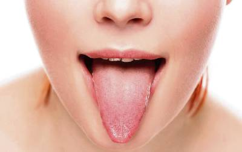

လျှာအရောင်က ပြောတဲ့ သင့်ကျန်းမာရေးအခြေအနေ

လျှာဟာ အရိုးမရှိဘဲ ကြွက်သားတွေနဲ့ပဲ ဖွဲ့စည်းထားတဲ့ အင်္ဂါဖြစ်ပါတယ်။
လျှာဟာ အစားအသောက်တွေကို အရသာခံဖို့၊ စကားပြောဖို့အတွက် အရမ်းအရေးပါတဲ့ အင်္ဂါအစိတ်အပိုင်းဖြစ်ပြီး အစားအသောက်တွေကို ဝါးရာမျိုချရာမှာလည်း အထောက်အကူပြုပါတယ်။
ဒါ့အပြင် လျှာရဲ့အရောင်ပုံစံနဲ့အနေအထားကို ကြည့်ပြီး ခန္ဓာကိုယ်တွင်းမှာ ဘာတွေဖြစ်နေလဲဆိုတာကို သဲလွန်စကောက်နိုင်ပါသေးတယ်။
ဒါကြောင့် ကျွန်တော်တို့နေမကောင်းလို့ ဆေးခန်းသွားပြတဲ့အခါမှာ တချို့ဆရာဝန်ကြီးတွေက လျှာထုတ်ပြခိုင်းလေ့ရှိပါတယ်။
ပါးစပ်ဟ လျှာထုတ်ပြီး အားလို့ အော်ခိုင်းတာကတော့ လျှာရဲ့နောက်မှာရှိတဲ့အာသီးယောင်မယောင်ကို ကြည့်တာပါ။
ကျွန်တော်တို့ရဲ့ ပုံမှန်လျှာအရောင်ဟာ ပန်းနုရောင်ဖြစ်ပြီး လျှာအပေါ်မှာ အဖုအသေးလေးတွေများစွာရှိပါတယ်။ အဲ့အဖုအသေးလေးတွေဟာ ရသာခံဖုလေးတွေဖြစ်ပါတယ်။
တကယ်လို့ ပန်းနုရောင်မဟုတ်ဘဲ တခြားအရောင်တွေဖြစ်နေရင်တော့ ဗီတာမင်ဓါတ်တခုခုချို့တဲ့တာ၊ ကျန်းမာရေးပြသာနာ တခုခုဖြစ်တာ၊ ခံတွင်းရောဂါတခုခုဖြစ်နေတာ စသဖြင့် ဖြစ်နိုင်ခြေရှိပါတယ်။
လျှာအရောင်တွေပေါ်မူတည်ပြီး ဖြစ်နိုင်တဲ့အခြေအနေတွေကို သိသလောက်ရေးသားတင်ပြရရင်တော့ အောက်ပါအတိုင်းဖြစ်ပါတယ်။
၁။ လျှာအရောင်ဖြူခြင်း
လျှာအရောင်ဟာ ဖြူဖျော့နေတယ်ဆိုရင် ရေဓါတ်ခန်းခြောက်တာလည်းဖြစ်နိုင်သလို မှက်ခရု စွဲကပ်နေတာလည်း ဖြစ်နိုင်ပါတယ်။
မှက်ခရုဟာ မှိုရောဂါတစ်ခု ဖြစ်ပြီး ဘယ်သူမှာမဆို ဘယ်အသက်ရွယ်မဆို ဖြစ်နိုင်ပေမယ့် အသက် ၆ လအောက် ကလေးငယ်များတွင် ပိုပြီးအဖြစ်များတတ်ပါတယ်။ Candida albicans လို့ခေါ်တဲ့ မှိုတမျိူးကြောင့်ဖြစ်တာပါ။
ဒါ့အပြင် ခံတွင်းထဲရှိ ဆဲလ်တွေပွားများမှုများလာတဲ့ Leukoplakia လို့ခေါ်တဲ့အခြေအနေမှာလည်း လျှာအရောင်ဟာ ဖြူဖျော့နေတတ်ပါတယ်။ Leukoplakia ဟာ ဓါတ်မတည့်တဲ့ အခြေအနေမျိုးတွေမှာ ဖြစ်တတ်ပြီး ဆေးလိပ်သောက်တဲ့သူတွေမှာ ပိုဖြစ်လေ့ရှိနိုင်ပါတယ်။
၂။ လျှာအရောင်နီခြင်း
လျှာအရောင်ဟာ နီရဲနေတယ်ဆိုရင်တော့ လျှာရဲ့အရသာခံဖုတွေ ရောင်ရမ်းနေတာဖြစ်ပြီး ဗီတာမင်ဘီတွဲ နဲ့ ဖောလစ် အက်စစ်ဓါတ်တွေချို့တဲ့နေတာတွေကြောင့် ဖြစ်နိုင်ပါတယ်။
ဒါ့အပြင် Scarlet fever နဲ့ Kawasaki ရောဂါတွေဖြစ်တဲ့အခါမှာဆိုရင် လျှာဟာ စတော်ဘယ်ရီသီးမှည့်လို နီရဲရောင်ရမ်းနေတတ်ပါတယ်။
၃။ လျှာအရောင်ဝါခြင်း
သွားနှင့် ခံတွင်းသန့်ရှင်းမှု အားနည်းခြင်း၊ ဆေးလိပ်သောက်ခြင်း၊ တချို့ဆေးတွေ သောက်ခြင်းတွေက လျှာဝါခြင်းကို ဖြစ်စေနိုင်ပါတယ်။
သို့သော် တခါတရံမှာ လျှာဝါတာဟာ အသည်းနဲ့ အစာအိမ်လမ်းကြောင်းဆိုင်ရာ ရောဂါတခုခု အစပျိုးနေတာလည်း ဖြစ်နိုင်ပါတယ်။
သွားနဲ့ ခံတွင်းသန့်ရှင်းမှု ဂရုတစိုက်လုပ်ပြီး ဆေးလိပ်ဖြတ်လို့မှ လျှာအရောင်ဝါတာ မလျော့သွားရင် ဆေးခန်းပြသကြည့်ဖို့ လိုပါတယ်။
၄။ လျှာအရောင်ပြာခြင်း
လျှာအရောင်ပြာတာဟာ သွေးထဲမှာ အောက်စီဂျင်ဓါတ် လျော့နည်းနေတာကြောင့် ဖြစ်နိုင်ပြီး
နှလုံး အလုပ်ကောင်းမလုပ်နိုင်တာ သို့မဟုတ် အဆုတ်ကောင်းကောင်း အလုပ်မလုပ်နိုင်တာ တွေကြောင့် ဖြစ်နိုင်ပါတယ်။
၅။ လျှာအရောင်ညိုခြင်း
ကော်ဖီ အများကြီးသောက်တာ၊ ဆေးလိပ်သောက်တာတွေကြောင့် လျှာအရောင်ညိုခြင်းကို ဖြစ်စေနိုင်ပါတယ်။
သို့ပေမယ့် အချိန်ကြာသည့်တိုင် ညိုတာလျော့မသွားဘဲ တောက်လျှောက် လျှာအရောင်ညိုနေတယ်ဆိုရင်တော့ ကင်ဆာရောဂါ (အရေပြားကင်ဆာ၊ ခံတွင်းကင်ဆာ) တွေရဲ့ ရှေ့ပြေးလက္ခဏာ ဖြစ်နိုင်လို့ ဆေးခန်းပြဖို့လိုပါမယ်။
၆။ လျှာမည်းခြင်း
လျှာဝါသလိုပဲ လျှာမည်းတာဟာ သွားနဲ့ ခံတွင်းသန့်ရှင်းမှု အားနည်းရာမှတဆင့် လျှာရဲ့မျက်နှာပြင်ပေါ်မှာ ဘက်တီးရီးယားပိုးတွေ စုစည်ပွားများလာခြင်းကြောင့် ဖြစ်ပါတယ်။
ဘက်တီးရီးယားပိုး အမျိုးအစားပေါ်မူတည်ပြီး အဝါနဲ့ အမည်းရောင်ဖြစ်တာ ဖြစ်ပါတယ်။
ဒါ့အပြင် ဆီးချိုရောဂါရှိတဲ့သူတွေ၊ ပိုးသေဆေးတွေ သောက်နေရတဲ့သူတွေ၊ ကင်ဆာဆေးသွင်းကုသမှုခံယူနေတဲ့ သူတွေမှာလည်း လျှာအရောင်ဟာ အမည်းရောင်ဖြစ်နေတတ်ပါတယ်။
အဆုံးသတ်အနေနဲ့ မှာချင်တာကတော့ လျှာအရောင်ကောင်းစေရန် အောက်ပါအချက်တွေကို လိုက်နာကြပါလို့ အကြံပေးချင်ပါတယ်။
– အစာစားပြီးတိုင်း ပလုတ်ကျင်းပါ။
– တနေ့ကို အနည်းဆုံး နှစ်ကြိမ်သွားတိုက်ပေးပါ။ သွားတိုက်တဲ့အခါမှာ လျှာကိုလည်း သွားပွတ်တံနဲ့ သေချာတိုက်ပေးပါ။
– ဆေးလိပ်ဖြတ်ပါ။
– ရေများများသောက်ပါ။
– အသား ငါး ဟင်းသီးဟင်းရွက်စုံလင်မျှတအောင်စားပါ။
Source-Dr 528